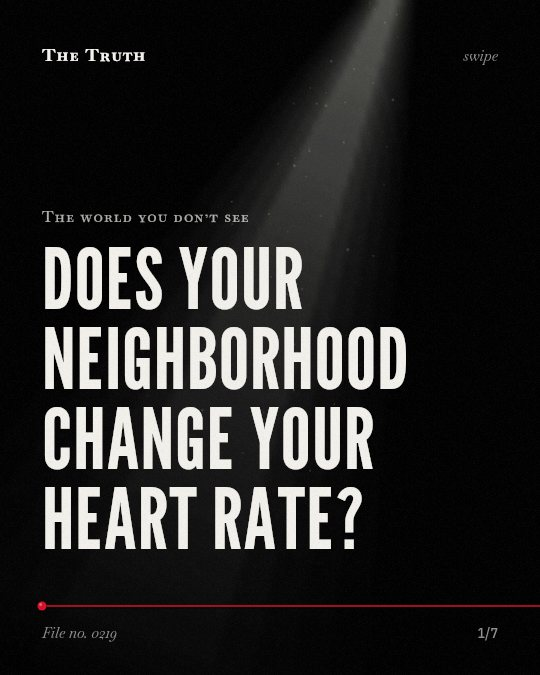

The world you don’t see
Does your neighborhood change your heart rate?

Affluence carries distinct physiological and behavioral trade-offs.
The evidence is mixed. While high-status areas offer environmental benefits like cooler temperatures, they are linked to specific behavioral risks and heightened physiological reactivity in certain groups.
Established. Several studies combined, or official data. The evidence is mixed.
What the research found
Participants from families with higher education exhibited greater reactivity to the affluent neighborhood.
“Participants from families with higher education exhibited greater reactivity to the affluent neighborhood.”
Experiment, 2019. Hackman et al., Scientific Reports.
Attending schools with more affluent schoolmates was associated with heightened likelihoods of intoxication, drug use, and property crime.
“Attending schools with more affluent schoolmates was associated with heightened likelihoods of intoxication, drug use, and property crime”
Study, 2017. Coley et al., Child Development.
Exposure to neighborhood disadvantage resulted in greater negative emotion and less positive emotion compared to exposure to affluence.
“Exposure to neighborhood disadvantage resulted in greater negative emotion, less positive emotion, and more compassion, compared to exposure to affluence.”
Experiment, 2019. Hackman et al., Scientific Reports.
Long-term exposure to environmental noise increases the risk of depression and anxiety in adults aged 35 or older.
“Long-term exposure to environmental noise increases the risk of depression and anxiety in adults aged 35 or older.”
Meta-analysis, 2025. Hu, Noise and Health.
Affluent neighborhoods had cooler summer temperatures that reduced exposure to outdoor heat-related health risks, especially during a heat wave period.
“Affluent neighborhoods had cooler summer temperatures that reduced exposure to outdoor heat-related health risks, especially during a heat wave period.”
Study, 2008. Harlan et al., Research in social problems and public policy.
The environment shapes your physical and social reality.
Living in an affluent neighborhood can reduce exposure to heat-related health risks. However, these same areas are associated with a higher likelihood of intoxication, drug use, and property crime.
Your surroundings dictate your internal state.
That may be why your neighborhood feels different. Your body may react to your surroundings based on your background, while your environment simultaneously alters your risk of crime or heat stress.
This part is our reading of the evidence, not a finding.
The quiet of a manicured street.
You walk past a row of perfectly kept houses. The air feels cooler than the city center. You feel the weight of the status around you.
The honest summary
The evidence shows that affluence is associated with both specific behavioral risks and distinct physiological and environmental benefits, rather than a uniform psychological cost.
The study on physiological reactivity used simulated neighborhood environments rather than real-world living conditions.
What is your neighborhood doing to your body?
Sources
- Xinling Hu (2025). Systematic Review and Meta-Analysis of the Association between Environmental Noise Exposure and Depression and Anxiety Symptoms in Community-Dwelling Adults. Noise and Health. Meta-analysis, cited 8 times.
- Daniel A. Hackman, Stéphanie Robert, Jascha Grübel et al. (2019). Neighborhood environments influence emotion and physiological reactivity. Scientific Reports. Experiment, cited 62 times.
- Sharon L. Harlan, Anthony J. Brazel, George Darrel Jenerette et al. (2008). In the shade of affluence: the inequitable distribution of the urban heat island. Research in social problems and public policy. Study, cited 202 times.
- Rebekah Levine Coley, Jacqueline Sims, Eric Dearing et al. (2017). Locating Economic Risks for Adolescent Mental and Behavioral Health: Poverty and Affluence in Families, Neighborhoods, and Schools. Child Development. Study, cited 104 times.
Also read for this file, not quoted
This file was researched and drafted by software, then checked by rules a model cannot talk its way around: each quote above was matched word for word against the paper, and every number had to appear in it. How files are made.